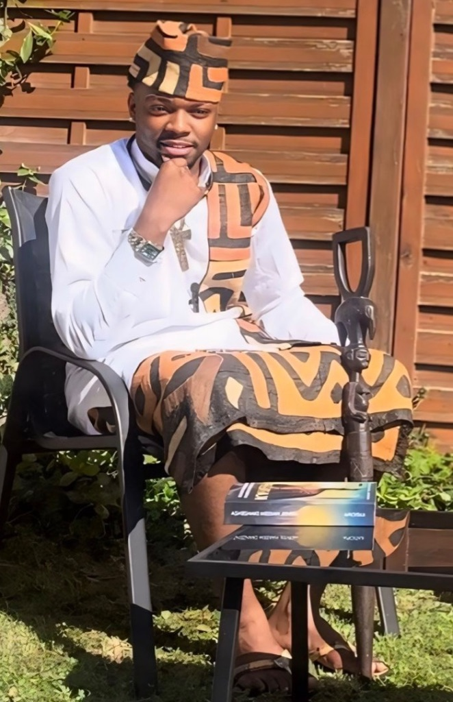

Merveil Hakeem Dianzenza
Écrivain afrofuturiste franco-congolais, réalisateur et fondateur d'Hakvision. Né en Côte d'Ivoire, élevé en France, partagé entre Paris et Kinshasa. Auteur de 3 livres publiés, bâtisseur d'une vision panafricaine audacieuse.

Merveil Hakeem Dianzenza, écrivain afrofuturiste — Paris / Kinshasa, 2025.
Un écrivain entre deux mondes
Né en Côte d'Ivoire, élevé en France et partagé entre Paris et Kinshasa, Merveil Hakeem Dianzenza est l'écrivain, journaliste et réalisateur qui a bâti le roman-fleuve KATIØPA (634 pages), Un Écrivain à Kinshasa et la biographie officielle de Papa Masambukidi.
Chroniqueur de l'intronisation d'octobre 2025 du Roi Divin du Bassin du Congo, il prépare la première édition 2026 des Prix Masambukidi et Dianzenza, avec une remise prévue à Kinshasa début mars pour célébrer les plumes noires du continent.
Hakvision : bâtir le futur africain
Porté par une ambition tenace, il rêve de voir le Congo rayonner de ses propres richesses, moderne et prospère. Son projet Hakvision incarne une vision technologique enracinée dans les valeurs africaines.
Une plateforme pour redonner une voix puissante au continent, mêlant littérature, spiritualité et innovation. Il nourrit le désir d'explorer des territoires rares et d'y bâtir des ponts culturels durables.
« Nous ne sommes pas les descendants d'esclaves. Nous sommes les héritiers de royaumes oubliés. Et il est temps que le monde s'en souvienne. »
— Merveil Hakeem DianzenzaBibliographie
Œuvres publiées 2025

KATIØPA — La Prophétie Noire
Le roman qui ressuscite l'âme africaine. Une insurrection mystique pour le réveil spirituel du continent, mêlant spiritualité ancestrale, géopolitique et révélations ésotériques. Familles royales, guerres spirituelles, Renaissance du continent.


Parcours
Événements majeurs 2025
30 Octobre 2025
Voyage à Kinshasa — Intronisation de Papa MasambukidiPrésent en tant qu'auteur de la biographie officielle et chargé de protocole lors de la cérémonie historique d'intronisation de Papa Samuel Masambukidi en tant que Roi Divin du Bassin du Congo.
Voir la vidéo YouTube17 Août 2025
Jour du Livre à KinshasaPrésentation officielle de KATIOPA et Papa Masambukidi à la communauté Masambukidi. Un événement majeur pour la littérature congolaise.
Avril 2025
Interview Jukebox MindEntretien approfondi sur KATIOPA et l'afrofuturisme spirituel : vision, inspirations et avenir de la littérature africaine.
Horizon
Projets en cours
OkapiPlay
Plateforme de divertissement africain innovante. Interface cerveau-jeu conçue par Hakvision pour révolutionner le gaming panafricain.
En savoir plus →Série Animée KATIØPA
Adaptation audiovisuelle en développement. L'épopée afrofuturiste prend vie à l'écran dans une production panafricaine ambitieuse.
Prix Masambukidi & Dianzenza
Première édition 2026 à Kinshasa. Deux prix littéraires pour célébrer l'excellence des écrivains afrodescendants.
Candidater →Restez connecté
Rejoignez la révolution littéraire africaine
Suivez les actualités Hakvision, les lancements de livres et les événements culturels depuis votre mobile.